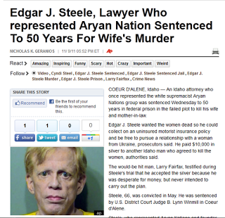

|
| Federal Court is in session. |
Ten years ago, a 21-year-old woman named Tonya Hart was shot
to death in a Moscow, Idaho trailer court. Two years later, a local man named David J. Meisner, who
confessed to the crime during a recorded police interrogation, was convicted of
murder and sentenced to life in prison. Last month, the Idaho State Supreme
Court ruled that trial judge John Stegner committed a reversible error when he
refused to allow the defense to present evidence that someone else might have
pulled the trigger on the gun used to kill Miss Hart.
A
new trial for Meisner is currently underway in Moscow. The prosecution has
finished presenting evidence, and the defense is expected to take at least two
weeks presenting its case. The first witness summoned to testify on Meisner’s
behalf is Dr. Richard Ofshe, an emeritus professor at the University of
California-Berkley, a nationally respected expert in the field of false
confessions.

The taped confession is the central piece of
evidence against Meisner in what the prosecution
characterizes as a case of “murder for hire.”
Hart’s ex-boyfriend, Jesse Linderman,
supposedly offered to pay Meisner $1,000 to murder the young woman, with a $100
bonus if the killing took place before Christmas. The
charges against Linderman were dropped for a lack of evidence. As the state
supreme court noted, the only evidence tying Linderman to the crime was
Meisner’s disputed confession.
During the trial, Judge Stegner refused to permit the
defense to present evidence that a man named Lane Thomas, who had repeatedly
confessed to the murder, was the individual who had shot Miss Hart. Stegner didn’t
explain why Meisner’s confession was uniquely credible. The Idaho Supreme Court
ruled that by granting the prosecution’s motion to exclude Thomas’s
confessions, Judge Stegner had violated Meisner’s right to present a defense,
as protected by the Sixth Amendment.
In this “murder for hire” case, the supposed triggerman was
convicted on the basis of a confession that was considered inadequate to
establish the guilt of the alleged instigator of the plot. However, in the new
trial the defense will have be permitted adequate time to present its case;
this includes testimony from expert witnesses like Dr. Ofshe.
The Tonya Hart murder case is practically a photographic
negative of another high-profile murder for hire case from northern Idaho: The supposed
plot by attorney Edgar Steele to hire a handyman named Larry Fairfax to murder
his wife Cyndi by planting a pipe bomb on her SUV.
In the latter case, however, the confessed bomber, who acted
as a “cooperating informant” with the FBI, was sentenced to a mere 27 months in
what amounts to a halfway house for possession of an unregistered firearm. Mr.
Steele, a 66-year-old man who has survived prostate cancer and a nearly fatal
coronary aneurysm, was sentenced on November 9 to 50 years in federal prison. While Meisner wasn't permitted to mount a defense in his original trial, the re-trial offers him a chance to exercise that right. Steele will most likely die in prison before he is afforded a similar opportunity.

Edgar Steele, who describes himself as the "attorney to the damned," has made a career out of defending reviled clients, such as the Aryan Nation. His political views and professional associations have made him a widely reviled figure -- but they do nothing to establish his guilt. The same is true of the supposition-rich and substance-poor case presented against him in court.
The prosecution’s case against Steele depended entirely on
two mutually dependent pieces of defective evidence. The first was the
accusation of the confessed bomber, Fairfax, who was accused by Steele and his
family of stealing a large quantity of silver and then framing the
controversial lawyer in order to conceal his crime. The second piece of
evidence was a third-generation copy of a digital recording made by the FBI of
a conversation in which Steele and Fairfax supposedly discussed the plan to
kill Cyndi.
Fairfax’s guilt is demonstrated by a huge volume of physical
evidence, including the defective pipe bomb whose existence he concealed from
the FBI until it was discovered on the undercarriage of Cyndi’s vehicle during
an oil change. Absent the recorded conversation between Fairfax and Steele on
June 9, 2010, the murder for hire case against Steele would disintegrate.
Prior to the trial, the FBI recording was examined by Dr. George Papcun, a forensic scientist who has advised
numerous law enforcement and intelligence agencies. Dr. Papcun discerned
hundreds of “transients” and other anomalies in the pre-trial version of the
FBI recording. He concluded that there was “a reasonable degree of scientific
probability that [the recordings] do not represent a true and valid
representation of reality and they are unreliable.”
| Winmill (l.), seen here, appropriately, with a Soviet-era Russian Judge. |

This expert
assessment would have been devastating to the prosecution. This is probably why
Judge Winmill, during Steele’s
Sovietesque trial in federal court last May, exerted himself to prevent it from being shared with the
jury.
At the time of the trial, Dr. Papcun was vacationing in Bora Bora. On May
2, Winmill ruled that Papcun would be permitted to offer testimony by way of a
video teleconference at a U.S. Consulate the following day.
That ruling caused
Traci Whelan, the federal commissarina presiding over the prosecution, to stomp
off into a corner, stick out her lower lip, and began to sniffle. Winmill – who
either believes in mystical
bilocation, or (more likely) subscribes to a totalitarian view of the law
-- reversed himself, ruling that Papcun had to be present in the Boise courtroom
no later than 8:30 a.m. on May 4.
This wasn’t the end of Winmill’s corrupt
solicitude for the prosecution. The Judge also permitted Whelan and her comrades to
present the videotaped and translated testimony of a Ukrainian woman named
Tatyana Loginova, who claimed that Steele was conducting an online affair
with her. Steele maintained that his online conversations with Loginova – who advertised
herself as a mail-order bride -- were research for a book about international
sex trafficking. Implausible though that account might seem to some people, it
was validated by Steele’s friends and family – including his wife Cyndi, who
has loudly and consistently protested that her husband is innocent.
 |
| Lying by headline: The "victim" is alive, and supports her husband. |

Cyndi’s role – indeed, her very presence – underscores the most
critical contrast with the Tonya Hart murder. In the Edgar Steele case, the “victim”
is alive and well. Indeed, there is no victim, at least as that term was used
by the prosecution.
“We have a great marriage,” Cyndi Steele told Winmill during
the sentencing hearing. “I am not a victim of my husband because my husband did
nothing wrong. I am a victim of the government.”
When it was announced that Edgar Steele’s murder-for-hire
trial in Boise would be heard by Judge Winmill, informed
court-watchers in Idaho knew that the proceedings would be a show trial – a spectacle
scripted by Franz Kafka and directed by Andrei Vyshinsky. Lynn Winmill’s courtroom is where justice
goes to die. The family of the late Verl Jones, who owned a family ranch near
the Montana border, can testify that his description is untainted by hyperbole.
For many years, Judge Winmill has been a stalwart ally of
the Western Watersheds Project (WWP), a foundation-funded radical environmental
group that has played a key role in the eco-Jihad against property rights in
Idaho. WWP has filed several lawsuits intended to shut down human use of lands
that – in defiance of the Constitution – are owned and controlled by the
federal government.
Writing in the Spring 2008 issue of Range magazine, State
Representative Judy Boyle described Winmill as the “WWP’s sugar daddy who very
seldom rules against them, often incorporating pieces of WWP’s briefs to
justify his decisions.” In fact, when the WWP files a claim under the
Endangered Species Act, Winmill generally won’t even require the group to
present evidence before ruling in its favor.
This was what happened in the case of Mr. Jones, who was
sued by WWP in 2001 over an irrigation ditch he had dug forty years earlier.
Exercising his federally recognized right to use water from Otter Creek, Jones
dug the ditch on his own property to grow hay.
The WWP claimed that the diversion of water harmed the endangered bull
trout, despite the fact that none existed in Otter Creek. Without requiring the
WWP to show evidence to support its claims, Winmill ordered Jones to stop
irrigating his hay fields, and to pay the WWP’s legal fees.
| "I'm a victim of the government": Cyndi Steele. |

The requirements imposed by Winmill on the 85-year-old Jones
were akin to Pharaoh’s spiteful order that the Hebrew slaves be required to
make bricks without straw.
The loss of Jones’s hay crop threw the ranch into a
fatal economic tailspin. Unmoved by the rancher’s plight, Winmill ordered him
to provide the WWP with a list of all his assets, which the eco-radical group
sold in order to pay its court costs. The stress and frustration literally
killed the elderly rancher.
Seattle-based litigator Russell Brooks of the Pacific Legal
Foundation took the case before the 9th Circuit Court of Appeals,
which overturned Winmill’s decision.
“The 9th Circuit judges ruled that
actual evidence of a species being harmed must be presented, not just alleged,
before a judge can legally order an injunction,” recalls Rep. Boyle – a
principle that Winmill is intelligent enough to understand, but sufficiently
corrupt and arrogant to ignore.
Winmill’s behavior in the Edgar Steele case was of a piece
with his treatment of Verl Jones, and any honest federal appellate court -- a species last seen keeping company with the unicorn -- would overturn
the conviction and order a new trial. It’s quite reasonable to suspect that
Winmill, a recidivist persecutor of sick, powerless, elderly defendants, has
cynically calculated that Steele, like Jones, will expire before being granted an actual trial.
Obiter Dicta
The next issue of Republic magazine -- for which I serve as managing editor -- will have a detailed cover story examining the Edgar Steele case.
Grateful as I am for the Republic gig, I'm compelled to point out that it doesn't offer an extravagant paycheck -- so your help in supporting Pro Libertate is still desperately needed and emphatically appreciated!
Dum spiro, pugno!
8 comments:
no need to post
Greetings Will
Shared
Thank you for writing this essay
Doc Ellis 124
you wrote in graf # 6
However, in the new trial the defense will [have be permitted] adequate time to present its case; this includes testimony from expert witnesses like Dr. Ofshe.
I think you meant to write [have] or [be permitted]. I have shared with the [have] correction.
you wrote in graf # 18
The family of the late Verl Jones, who owned a family ranch near the Montana border, can testify that [his} description is untainted by hyperbole.
I think you meant to write [this]
no need to post
Pray tell, Mr. Grigg, what does a Nazi judge giving a democratic salute have to do with Edgar Steele or Verl Jones? Answer: none. Your guilt by association is truly repugnant. Typically American, but ugly nonetheless.
Perhaps a picture of the Nuremberg Trial lawyers would be more suitable. I do not know of any Nazi judge doing anything worse than what the Americans displayed at that trial. Your blog only proves the corruption has never stopped. Don't blame the Nazis for that. It will not exonerate you.Thanks.
"Pray tell, Mr. Grigg, what does a Nazi judge giving a democratic salute have to do with Edgar Steele or Verl Jones?"
Roland Freisler, the Communist-turned-National Socialist shown giving the Jacobin-inspired salute, was a lawless, self-glofying bully who presided over a rogue federal court in what had once been a constitutional republic. In that sense I think he was an identifiable antecedent of Lynn Winmill. I hope that clears things up!
“The 9th Circuit judges ruled that actual evidence of a species being harmed must be presented, not just alleged, before a judge can legally order an injunction,”
And yet the lawsuit was allowed to continue, ruining an innocent man. Why does Idaho not do anything to remove assholes like this from the bench?
Paul,
You raise a good question. As a lifelong resident of the area, the only answer I can give is my own personal observation that most of the population here is not terribly swift.
To anon 11:39, I believe Mr. Grigg has treated you far more politely than you deserve.
To Will,
I have a new toy you absolutely must see. i will try to give you a call later this week.
Cheers,
JK
As a lifelong resident of the area, the only answer I can give is my own personal observation that most of the population here is not terribly swift.
That statement could apply to pretty much any locality is these dumbed-down Amoricon states.
I doubt it's that they're not too swift...probably just broken to the point of being accustomed to servility. Most can only keep the fires of independence stoked for so long, and our keepers know it.
Anonymous above is a very good example. He/she has absolutely no clue what is going on in this country and how judges like this man are paid by privately run prisons to send their mean ticket to the pokey so they can make a profit. Not saying he did that, but that it is being done by judges that we assumed were above being corrupted. Bad assumption. Also there were judges using children in Georgia that were being pimped to them by the Child Protective Services and GA senator Schaffer tried to expose it and both her and her husband were murdered. That is how seriously high up all this filth, perversion and gestapo repression goes.
Men going to jail and being electrocuted when its clear that their guilt or innocence is not known. Our system was based on "beyond a reasonable doubt". Well, no longer and when its Ms or Mr. Anonymous turn, watch the worm crawl the other way. Its different when its your spouse or child isn't it??? Becareful, soon, everyone will have to climb off the fence and in either case its going to be dangerous, no matter which way you go.
Post a Comment